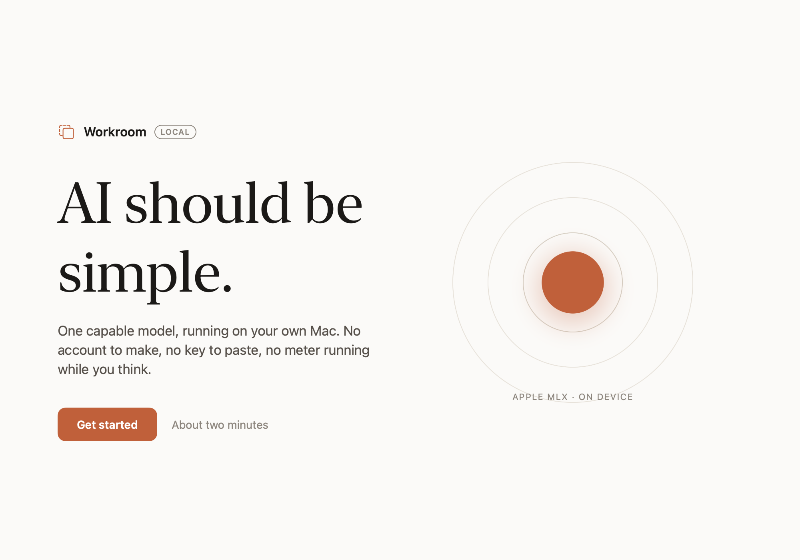
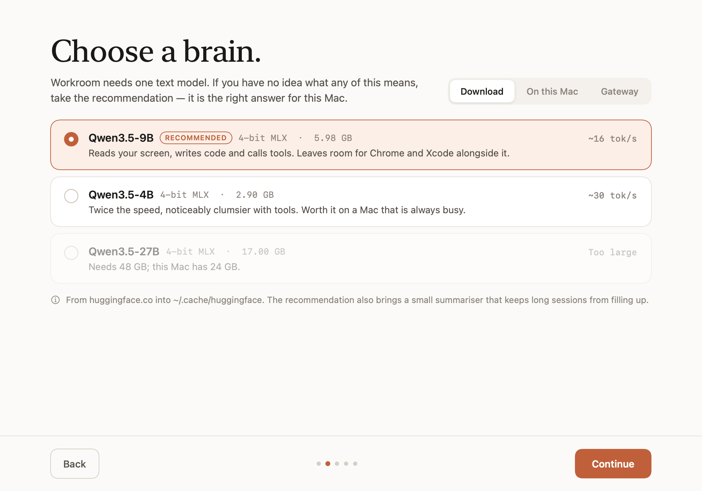
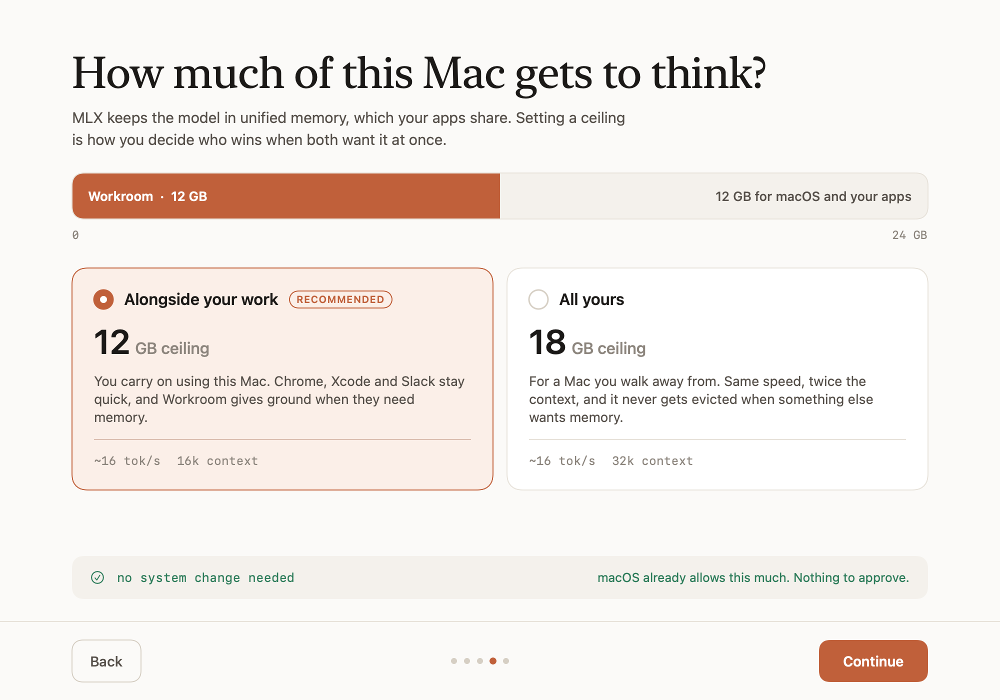

A computer-use agent that runs entirely on your Mac. One model reads the screen, runs commands and edits files — with no account, no API key, and nothing leaving the machine.

Workroom is not notarised — it is a free open-source project and Apple charges for a developer account. macOS will refuse to open it on the first attempt. This is the standard way around that, and you only do it once.
After that it launches normally. If macOS still blocks it, go to System Settings → Privacy & Security and click Open Anyway.
Prefer not to run unsigned software? The command line does the same job, from source you can read:
$ git clone https://github.com/IAMIbrahimmemon/mlx-llm-workroom $ cd mlx-llm-workroom && uv sync $ uv run workroom
Onboarding looks at the machine before it offers you anything: models in your Hugging Face cache, models you have pulled with Ollama, and any OpenAI-compatible gateway already listening on localhost.

On Apple silicon the model's weights and your browser tabs draw on the same memory. Workroom asks once where the ceiling goes, and tells you which answer needs an admin password.

| Preset | On a 24 GB Mac | Password | For |
|---|---|---|---|
| Alongside your work | 12 GB · 16k ctx | no | you keep using the Mac |
| All yours | 18 GB · 32k ctx | once per boot | you walk away and let it run |
Both run at the same speed. Decode is bound by memory bandwidth, not capacity, so a higher ceiling buys context — not tokens per second.
Base M3, 24 GB, 12 GB ceiling. Every number in this project comes from a machine, not an estimate.
| Prompt | Tokens / sec | Peak memory |
|---|---|---|
| 1 000 | 16.3 | 6.54 GB |
| 8 000 | 16.8 | 7.70 GB |
| 16 000 | 15.7 | 8.48 GB |
Screenshots, keystrokes and file contents are handled in memory on your Mac. There is no server to trust.
Qwen3.5-9B reads your screen and writes your code from a single 5.98 GB set of 4-bit MLX weights.
sudo, recursive deletes and force pushes stop and ask. Disk formatting and keychain dumps never run at all.